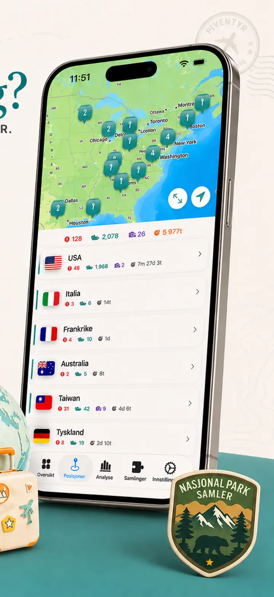
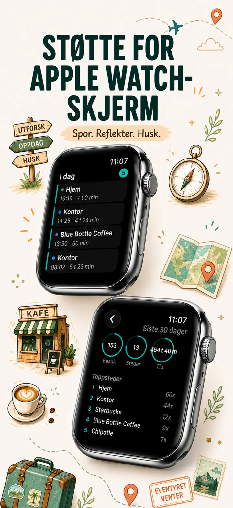
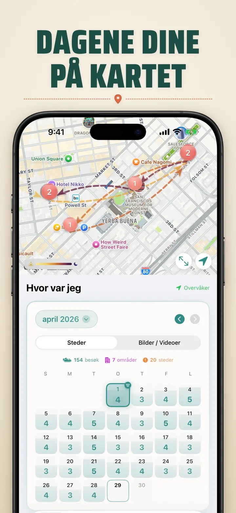
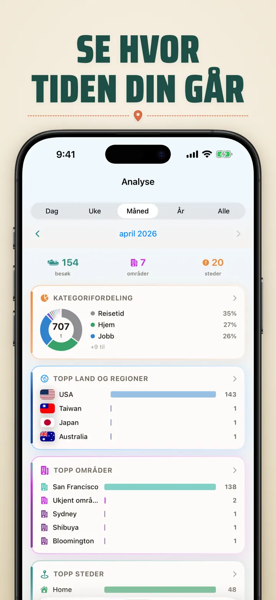
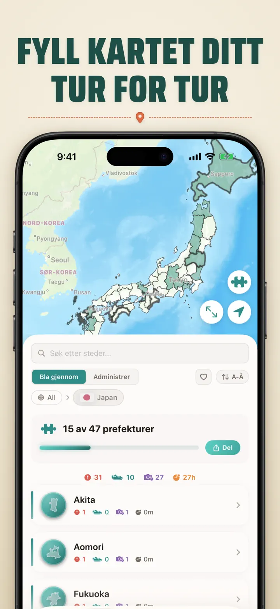
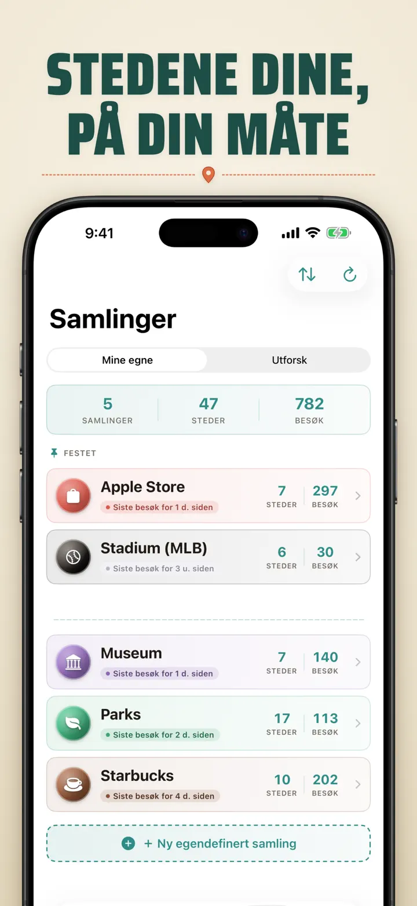
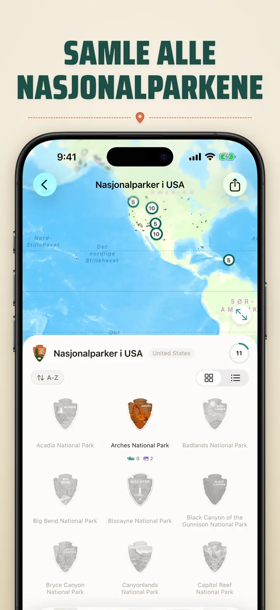
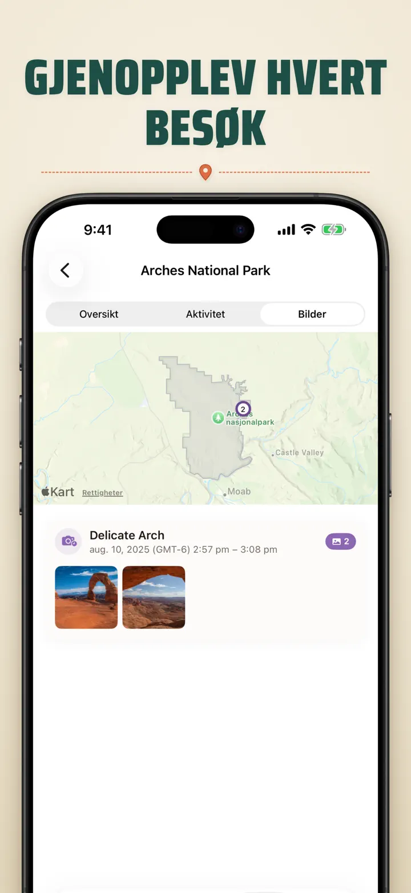

Hvor var jeg?
Spor steder/bilder & fremgang
Nytt: Japans 103 Ichinomiya-helligdommer, hver med sitt eget treskårne merke. Automatisk besøkssporing og en privat tidslinje, alt på enheten din.
Last ned i App StoreOm appen
Where was I ? — Ditt personlige stedsminne
Har du noen gang prøvd å huske den fantastiske restauranten fra forrige måned? Where was I ? sporer automatisk besøkene dine og bygger en vakker tidslinje over livets reise.
AUTOMATISK SPORING
Ingen manuell logging nødvendig. Appen registrerer stille når du ankommer og forlater steder, og oppretter en detaljert besøkshistorikk uten noen innsats fra din side.
SMART KALENDERVISNING
Se besøkene dine organisert etter dag, uke eller måned. Den intuitive kalenderen viser besøksantall og unike steder med ett blikk. Trykk på en dag for å se nøyaktig hvor du var.
HJEM- & LÅSESKJERM-WIDGETS
Se de nyeste besøkene dine med ett blikk med den mellomstore Hjem-widgeten. Låseskjerm-widgets viser nåværende sted, en live-oppholds-timer eller dagens besøksantall — alle trykkbare for å hoppe direkte inn i appen.
ORGANISERTE STEDER
Steder grupperes automatisk etter region og by. Tildel egne kategorier som Hjem, Jobb, Treningssenter eller Kafé. Lag dine egne kategorier med tilpassede ikoner og farger som passer livsstilen din.
KRAFTFULL ANALYSE
Oppdag mønstre i livet ditt:
- Tidsfordeling på tvers av kategorier
- Dine mest besøkte steder
- Analyse av ukentlig rytme
- Trender i besøksfrekvens
- Diagram over oppholdstid per sted — se hvor lenge du vanligvis blir, per dag, uke, måned eller år
LANDS-REGIONS-SAMLING
Gjør reisene dine til et puslespill! Se hvor mange stater, provinser eller regioner du har besøkt i hvert land. Del fremgangen din som et puslespillbilde.
NASJONALPARKFREMGANG
Utforsk naturen! Logg automatisk besøkene dine i nasjonalparker.
JAPANS 100 BERØMTE SLOTT
Reiser du i Japan? En ny innebygd samling sporer besøkene dine til landets 100 berømte slott. Finn den i Samling-fanen → Utforsk → Japan.
EGNE SAMLINGER
Spor hva som helst — Apple Stores, museer, bryggerier, bokhandlere. Opprett en samling, sett nøkkelord, og se den fylles automatisk. Hver samling viser antall, besøkshistorikk og et kart.
IMPORTER STEDSHISTORIKKEN DIN
Kommer du fra en annen app? Ta med deg hele historikken din — formatet gjenkjennes automatisk, store eksporter håndteres, og du ser en forhåndsvisning før noe importeres:
- Google Timeline (Google Maps-eksport eller Google Takeout)
- Arc Timeline (de månedlige .json-filene du eksporterer fra Arc)
- Moves (ProtoGeo / Facebook Moves-sikkerhetskopi)
MASSEADMINISTRASJON
Administrer alle stedene dine på ett sted. Søk, sorter og filtrer. Velg flere steder for å kategorisere eller slette dem samlet. Hold stedsbiblioteket ditt ryddig og organisert.
PERSONVERN FØRST
Stedsdata forblir på enheten din. Ingen kontoer kreves. Ingen data sendes til servere. Bevegelsene dine er din sak.
PERFEKT FOR:
- Spore arbeidstimer og steder
- Huske restauranter og butikker du har besøkt
- Analysere den daglige rutinen din
- Føre reisedagbok og logge nasjonalparkbesøk
- Utgiftsrapportering og kjørelengdesporing
- Forstå tidsbruken din
FUNKSJONER:
- Automatisk ankomst- og avgangsdeteksjon
- Kalendervisning med daglig besøkstidslinje
- Hjem- og låseskjerm-widgets med deep-linking
- Stedsgruppering etter region og by
- Egne kategorier med ikoner og farger
- Smarte kategoriforslag fra Apple Maps
- Detaljert besøkshistorikk med varighet
- Diagram over oppholdstid per sted (dag / uke / måned / år)
- Analysedashboard med innsikt
- Søk og filtrer steder
- Lands-regions-samling med delbart puslespillbilde
- Fremgangssporing i nasjonalparker
- Innebygd samling Japans 100 berømte slott
- Egne samlinger med automatisk nøkkelord-matching, manuell redigering og statistikk
- Masseadministrasjon av steder
- Import fra Google Timeline, Arc Timeline og Moves
- Eksportfunksjoner
- Ingen konto kreves
- Personvernfokusert design
Begynn å bygge stedsminnet ditt i dag. Last ned Where was I ? og glem aldri hvor du har vært.
Privacy Policy: https://masawata.net/privacy-policy.html Terms Of Service: https://www.apple.com/legal/internet-services/itunes/dev/stdeula/
Skjermbilder








Hvor var jeg?
Nytt: Japans 103 Ichinomiya-helligdommer, hver med sitt eget treskårne merke. Automatisk besøkssporing og en privat tidslinje, alt på enheten din.
Last ned i App Store